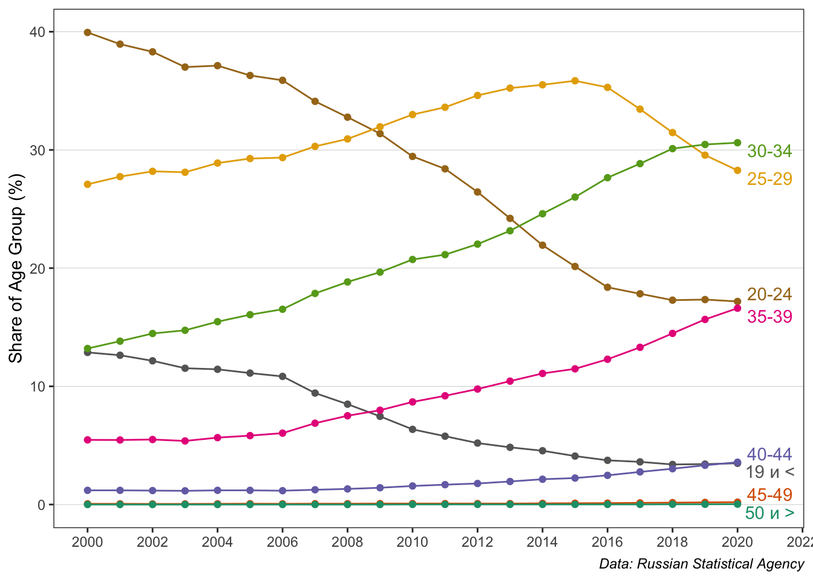

Supplementary Materials
Gender, Parenthood, and Academic Performance: Work-life and Work-work Balance in Russian Academia
Table S1: Sample Selection Criteria and Procedure
Table S2: List of Leading Universities
| # | University | Comment |
|---|---|---|
| 1-2 | Moscow State University; Saint Petersburg State University | |
| 3-23 | IKBFU (Kaliningrad); HSE (Moscow); FEFU (Vladivostok); KFU (Kazan); MIPT (Moscow); NUST MISiS (Moscow); MEPhI (Moscow); UNN (Nizhny Novgorod); NSU (Novosibirsk); MSMU (Moscow); RUDN (Moscow); SSAU (Samara); LETI (Saint Petersburg); SPbPU (Saint Petersburg); SIBFU (Krasnoyarsk); TSU (Tomsk); TPU (Tomsk); University of Tyumen (Tyumen); ITMO (Saint Petersburg); UrFu (Ekaterinburg); South Ural State University (Chelyabinsk) | Project 5-100 partisipants, 5top100.ru/en/ |
Table S3: Mean Age at First Child Appearance among Women and Men in the Sample
| Women (N=1340) |
Men (N=736) |
p-value | |
|---|---|---|---|
| Mean (SD) | 26.5 (4.79) | 28.0 (5.57) | <0.001 |
| Median [Min, Max] | 25.0 [17.0, 45.0] | 27.0 [17.0, 54.0] | |
| Missing | 348 (26.0%) | 210 (28.5%) |
Figure S1: Dynamics of Age at First Birth for Women in the General Population in Russia

Table S4: Comparison of Publication Productivity between Men and Women by Parenthood Status
| Women (N=303) |
Men (N=165) |
p-value | Women (N=543) |
Men (N=204) |
p-value | Women (N=412) |
Men (N=254) |
p-value | |
|---|---|---|---|---|---|---|---|---|---|
| Total publications in RISC | |||||||||
| Mean (SD) | 55.3 (47.6) | 67.6 (72.5) | 0.05 | 74.1 (64.0) | 94.9 (102) | 0.00695 | 70.6 (55.9) | 87.5 (82.2) | 0.00402 |
| Median [Min, Max] | 42.0 [4.00, 358] | 43.0 [4.00, 384] | 54.0 [3.00, 431] | 69.0 [5.00, 1090] | 57.0 [7.00, 381] | 61.5 [5.00, 645] | |||
| RISC Core publications | |||||||||
| Mean (SD) | 4.61 (7.24) | 8.01 (14.6) | 0.00545 | 5.46 (7.52) | 11.7 (17.3) | <0.001 | 5.43 (8.64) | 10.2 (20.6) | <0.001 |
| Median [Min, Max] | 2.00 [0, 57.0] | 3.00 [0, 106] | 3.00 [0, 40.0] | 5.00 [0, 116] | 2.00 [0, 98.0] | 4.00 [0, 225] | |||
| Age of respondent | |||||||||
| Mean (SD) | 43.6 (12.7) | 38.4 (10.4) | <0.001 | 51.0 (10.2) | 54.8 (13.9) | <0.001 | 50.3 (10.2) | 57.2 (12.8) | <0.001 |
| Median [Min, Max] | 42.0 [24.0, 76.0] | 36.0 [25.0, 75.0] | 50.0 [29.0, 76.0] | 56.5 [28.0, 79.0] | 48.0 [30.0, 75.0] | 59.0 [30.0, 80.0] |
Table S5: Regression Analysis of Publication Productivity
| Dependent variable: | ||||
| RISC Core | Total RISC | |||
| (1) | (2) | (3) | (4) | |
| Male | 3.4*** | 3.2*** | 8.1*** | 15.5** |
| (0.6) | (1.2) | (3.1) | (6.3) | |
| Age | 0.02 | 0.02 | 0.2* | 0.3* |
| (0.03) | (0.03) | (0.1) | (0.1) | |
| Have child | 0.5 | 0.8 | 5.1 | -1.5 |
| (0.7) | (1.2) | (3.7) | (6.2) | |
| Assistant Lect vs Head of Dep | -10.2*** | -10.2*** | -71.4*** | -71.3*** |
| (2.2) | (2.2) | (11.4) | (11.4) | |
| Associate Prof vs Head of Dep | -7.7*** | -7.7*** | -42.9*** | -43.0*** |
| (1.1) | (1.1) | (5.9) | (5.9) | |
| Full Professor vs Head of Dep | -1.3 | -1.3 | 11.2* | 11.2* |
| (1.2) | (1.2) | (6.4) | (6.4) | |
| Lecturer vs Head of Dep | -9.2*** | -9.2*** | -67.0*** | -67.2*** |
| (1.6) | (1.6) | (8.0) | (8.0) | |
| Other positions vs Head of Dep | -2.0 | -2.0 | -25.2*** | -25.0*** |
| (1.4) | (1.4) | (7.2) | (7.2) | |
| PhD student vs Head of Dep | -11.8*** | -11.8*** | -78.7*** | -78.6*** |
| (2.0) | (2.0) | (10.2) | (10.2) | |
| Uni vs Top Uni | -6.6*** | -6.6*** | 17.1*** | 17.1*** |
| (0.8) | (0.8) | (4.1) | (4.1) | |
| have_child:women | -0.3 | 9.7 | ||
| (1.4) | (7.3) | |||
| Constant | 15.9*** | 16.1*** | 72.3*** | 68.4*** |
| (2.0) | (2.0) | (10.2) | (10.6) | |
| Observations | 2,060 | 2,060 | 2,060 | 2,060 |
| R2 | 0.1 | 0.1 | 0.2 | 0.2 |
| Adjusted R2 | 0.1 | 0.1 | 0.2 | 0.2 |
| Residual Std. Error | 12.5 (df = 2049) | 12.5 (df = 2048) | 64.7 (df = 2049) | 64.7 (df = 2048) |
| F Statistic | 31.5*** (df = 10; 2049) | 28.6*** (df = 11; 2048) | 42.4*** (df = 10; 2049) | 38.7*** (df = 11; 2048) |
| Note: | *p<0.1; **p<0.05; ***p<0.01 | |||